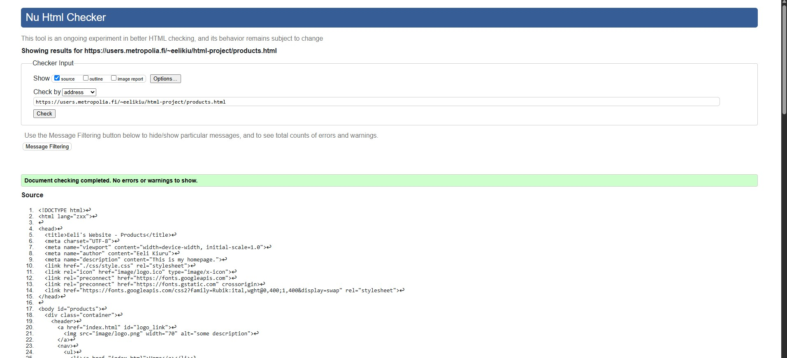
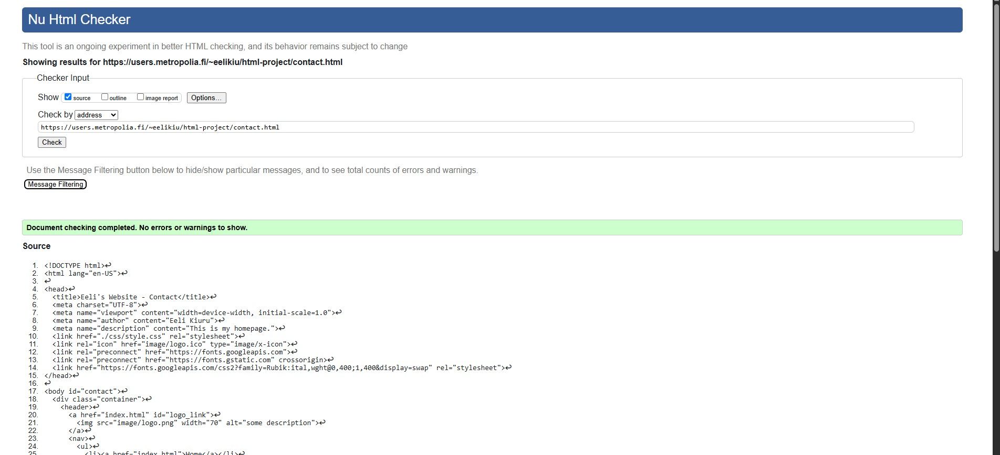
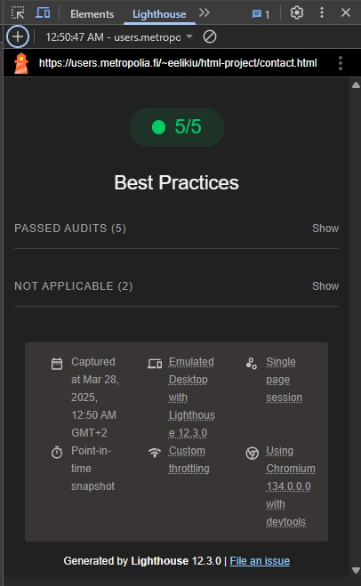

Font is from Google Fonts. Name: Rubik
- Embedded following code in the <head> (HTML)
<head>
<link rel="preconnect" href="https://fonts.googleapis.com">
<link rel="preconnect" href="https://fonts.gstatic.com" crossorigin>
<link href="https://fonts.googleapis.com/css2?family=Rubik:ital,wght@0,400;1,400&display=swap" rel="stylesheet">
...
...
...
</head>
- Added following into .container (CSS)
.container {
font-family: "Rubik", sans-serif;
font-optical-sizing: auto;
font-style: normal;
font-weight: 400;
...
...
...
}
index.html
products.html
contact.html
index.html
products.html
contact.html
Kurssin videolla annettu linkki https://color.a11y.com/Contrast/
ohjasi eri sivulle kun
videolla näytettiin. En saanut tuolta mitään järkevää niin etsin Googlesta eri contrast-checkereitä ja päädyin
Chromen laajennukseen Color
Contrast Checker by DigitalA11Y
index.html